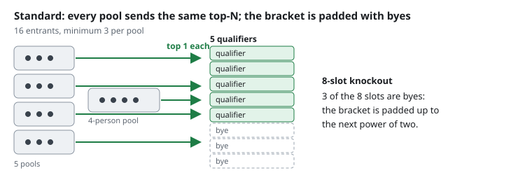
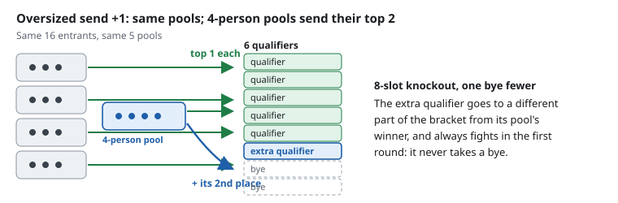
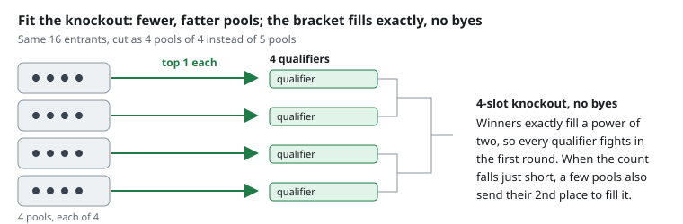

The knockout draw
In a competition with a pool phase, the knockout bracket is not redrawn once the pools finish. It is built when you generate the draw: every qualifying place has a slot waiting for it before a single pool match is played, and the preview shows you which pool feeds which slot.
This page explains how those slots are worked out, so you can check a draw before you publish it and answer questions about it at the desk.
It describes the Mixed format, pools followed by a knockout. A knockout-only competition has no pool finishers to place, so it seeds competitors into the bracket directly; the shiai-jo pages and the shiai-jo count rule below still apply to it.
How many qualify from each pool
Everything below this section assumes you already know how many competitors each pool sends up. This section is about where that number comes from.
By default, every pool sends the same number of qualifiers, set by Winners per pool in competition setup. When pool size is set to a minimum number of players rather than a maximum, so pools can come out different sizes, two further options let some pools send an extra qualifier instead of leaving the difference as byes. Choose between the three under Knockout qualifiers, which only appears for Mixed competitions under that pool-size setting. See Knockout qualifiers for where this lives in the app.
Standard
Every pool sends the same top-N; the bracket is padded with byes.

Every pool sends the same number of qualifiers. If those qualifiers don't fill every bracket slot, the rest are byes, allocated as described in Byes above. This is the default, and the only option available when pool size is set to a maximum.
Oversized send +1
Same pools; 4-person pools send their top 2 (at the default minimum of 3; in general, any pool larger than the minimum sends one extra).

A pool with more members than the smallest pool in the competition sends one additional qualifier, on top of the usual number. The extra qualifier is placed in a different part of the bracket from its own pool's other qualifier, and always fights in the first round: it never receives a bye. This offsets the extra pool matches that pool's members had to play to qualify.
The oversized-pool bye priority described above does not apply under this option. Being oversized earns a pool's winner no priority for an ordinary bye; the extra qualifier is the pool's compensation instead.
Requires Winners per pool set to 1. It works at any size, including a competition on a single shiai-jo: where there is more than one shiai-jo the extra qualifier is drawn onto a neighbouring one, and where there is only one it stays in that shiai-jo's bracket but in the opposite half from its own pool's winner. Either way the two qualifiers from the same pool cannot meet before the final, and the extra qualifier always fights in the first round.
Fit the knockout
Fewer, fatter pools; the bracket fills exactly, no byes.

Pool sizes are chosen so that pool winners, plus a handful of drafted second places, exactly fill the bracket. Nobody gets a bye, and every qualifier fights in the first round. This is how the sport's largest international championships cut their pools.
The drafted second places come from your seeded pools, in seed order; a pool larger than the minimum can also supply one when there are not enough seeds. Seeding therefore does more under this option than place your favourites: it decides which pools send a second qualifier, and can change how the pools are cut. A drafted second place is always placed in the opposite half of the bracket from its own pool's winner, so the two can only meet again in the final.
Requires Winners per pool set to 1. Some entrant counts cannot be built this way, most often on an unseeded competition whose pools cannot supply the drafted second places the bracket needs, and a small set of counts at four shiai-jo where the drafts cannot be split across the two halves of the bracket. If your entrant count hits this, the app explains what's wrong; seeding one or two more pools, adding or removing one entrant, or changing the shiai-jo count resolves it.
Worked examples: how many qualify
These figures are taken directly from the generator, at a minimum pool size of 3.
11 entrants, 2 shiai-jo
| Mode | Pools | Qualifiers | Bracket size | Byes | Rounds |
|---|---|---|---|---|---|
| Standard | 3 | 3 | 4 | 1 | 2 |
| Oversized send +1 | 3 | 5 | 8 | 3 | 3 |
| Fit the knockout | 3 | 4 | 4 | 0 | 2 |
Two of these three pools hold four competitors, so under Oversized send +1 both send a second qualifier: five qualifiers need an eight-slot bracket, which costs three byes and an extra round. Fit the knockout reaches the same three pools but drafts only one second place, which is what keeps the bracket at four slots with no byes. Standard sends only the three pool winners.
104 entrants, 4 shiai-jo
| Mode | Pools | Qualifiers | Bracket size | Byes | Rounds |
|---|---|---|---|---|---|
| Standard | 34 | 34 | 64 | 30 | 6 |
| Oversized send +1 | 34 | 36 | 64 | 28 | 6 |
| Fit the knockout | 32 | 32 | 32 | 0 | 5 |
At this size, two of the 34 pools are oversized. Oversized send +1 keeps all 34 pools and adds their two extra qualifiers, shrinking the bye count from 30 to 28 without changing the bracket size. Fit the knockout instead forms 32 pools rather than 34, which happens to be a power of two on its own, so no second places need drafting and byes drop to zero with a smaller, one-round-shorter bracket.
Shiai-jo blocks
Each shiai-jo gets its own block of the bracket, and it gets exactly one. Pools are allocated to shiai-jo in order: the first pools to shiai-jo A, the next to B, and so on. The qualifiers from those pools fill that shiai-jo's block. On fewer than four shiai-jo, and with two or more qualifiers per pool, that block is subdivided further so the draw keeps the shape a larger competition would have; see One or two shiai-jo.
A block is a real branch of the bracket, not just a run of names printed next to each other. Everything inside a block plays itself out and produces one survivor, and that survivor then meets the survivor of another block. This is what makes a shiai-jo's pages self-contained: an official running shiai-jo C can pick up the pages for shiai-jo C, and every match printed on them belongs to shiai-jo C.
Partner shiai-jo, and which qualifiers cross
Shiai-jo pair up, and partners sit in opposite halves of the draw. On four shiai-jo the pairs are A with C and B with D, which puts A and B in one half and C and D in the other.
Within each pool:
- The pool winner stays in its own shiai-jo's block.
- The runner-up crosses to the partner shiai-jo's block, which is in the other half of the draw.
- A third qualifier crosses further, to a block belonging to the other pair of shiai-jo, in the half that does not hold the pool winner.
Crossing is what keeps two competitors from the same pool apart. They have already met once in the pool, so the draw pushes their rematch as late as the shape allows.
One qualifier per pool
Nothing crosses. Every qualifier is its own shiai-jo's pool winner and stays in that shiai-jo's block, so the first-round matches are between pools of the same shiai-jo. That is the correct result, not an oversight: with one qualifier per pool there is no second competitor from the same pool to keep away.
Two qualifiers per pool
Winners stay, runners-up cross to the partner shiai-jo. Because partners are in opposite halves, a pool's winner and its runner-up land in different halves and can only meet in the final.
Three qualifiers per pool
Winners stay, runners-up cross to the partner, and the third qualifier crosses to the other pair of shiai-jo. All three land in different quarters of the draw. The winner is alone in its half, so it can still only meet either of the others in the final; the runner-up and the third qualifier share the other half and can meet no earlier than that half's semi-final.
Beyond three qualifiers per pool the same rotation continues, but a draw only has four quarters, so from the fifth qualifier onward two of a pool's qualifiers must share one. The draw still separates them as far as it can.
One or two shiai-jo
From two qualifiers per pool upwards, a competition on fewer than four shiai-jo does not get a simpler draw. Its pools are split in two, and where there are enough qualifiers each of those in two again, until the bracket is divided into blocks that act as partner shiai-jo: winners stay in their own block, runners-up cross to its partner, and a third or fourth qualifier crosses to one of the other two, exactly as they would on four real shiai-jo. On two shiai-jo each shiai-jo owns its share of those blocks; on one shiai-jo the single shiai-jo owns all of them.
A one-shiai-jo competition and a two-shiai-jo one with the same pools and the same number of qualifiers therefore get the same draw, with the same first-round matches and the same byes. Against four shiai-jo the match is close but not exact, because pools are allocated to shiai-jo before the draw is built and that allocation does not always divide the same way; six, ten or fourteen pools split five and five across two shiai-jo but three, three, two and two across four, which puts a different pool in the first half.
Two things limit the splitting. A block is only split again while every block would still hold two competitors on average, because a block left holding a single competitor gives that competitor a bye whatever the order below says, and a bye handed out by the shape of the split rather than chosen is not one the draw should be creating. And the splitting is done by repeated halving rather than by cutting the pool list into four in one go, so that the two halves of the draw stay the ones a two-shiai-jo competition would have.
At one qualifier per pool nothing is split at all. Nothing crosses between shiai-jo when each pool sends up a single competitor, so there is no partner structure to imitate, and each shiai-jo's block is left whole. That also lets the bye be chosen from every pool winner on that shiai-jo rather than from whichever half the split happened to leave with an odd number.
Partnering is also part of why the number of shiai-jo a competition uses is restricted. That restriction has its own section below: How many shiai-jo a competition can use.
When a block runs short
Structure comes first. A shiai-jo with fewer pools than the ones crossing into it ends up with a block short of home pool winners, filled out by crossed-in qualifiers. Two of those can come from the same shiai-jo and meet each other in the first round. The draw accepts that rather than breaking a block apart to avoid it; the third worked example below shows it happening.
The same applies to the depth of a block. When blocks that merge into the same match have different depths, the shallower slot goes to the shiai-jo with the fewest pools, then the fewest entrants, then the earliest shiai-jo letter. That shiai-jo's occupants had the smallest field to qualify from, so the shallower path evens out the number of matches on the way to the final. It is worked out automatically and is not a random draw.
How many shiai-jo a competition can use
A competition must be assigned 1, 2, 4, 8 or 16 shiai-jo, which is to say a power of two. No other count is accepted, and that includes even counts such as 6 and 10.
The reason is the block structure described above. The draw gives each shiai-jo its own block of the bracket, and the blocks merge in pairs: two blocks produce one survivor between them, those survivors pair off again, and so on until one is left. The count therefore has to halve cleanly all the way down, and only 1, 2, 4, 8 and 16 do.
Six shiai-jo shows why being even is not enough on its own. Six blocks pair off into three survivors, and three cannot pair off again: one of them would reach the final having fought a round fewer than the other two, purely because of how many blocks there were. Four blocks become two, and two become one, with no such gap.
16 is the highest count. It is also the most shiai-jo a tournament can have, so 32 is out of reach.
The rule applies to the formats that build a knockout bracket, which are mixed and playoffs. League and Swiss competitions produce no bracket to merge, so they can use any number of shiai-jo the tournament has.
It is a rule about one competition's allocation, never about your venue: a hall with three shiai-jo is perfectly normal and runs its competitions on 1 or 2 of them. See Assigning shiai-jo for how that works in practice, and for what happens to a competition that was saved with a count the rule does not allow.
The count you assign is also not always the count the draw uses. A competition is never drawn onto more shiai-jo than it has pools, so a larger allocation steps down to the largest allowed count that fits, without an error and without a warning: seven pools assigned eight shiai-jo run on four. See If you assign more shiai-jo than the competition has pools.
Byes
Byes are decided inside each block, never across the draw as a whole.
- A block with an even number of competitors gets no bye at all, whatever seeds you have set. There is nothing to award.
- A block with an odd number of competitors gets exactly one first-round bye.
Where a block has a bye, it goes to a pool winner, in this order:
- The winner of a seeded pool, taking the seeds in the order you set them (seed 1 first).
- The winner of an oversized pool, meaning any pool larger than the smallest pool in the competition, largest first, then in pool order.
- The winner of any remaining pool, in pool order.
The second criterion is fatigue compensation. In a round-robin pool of four, a competitor fights three matches to qualify, where a pool of three fights two. A knockout bye evens out both the total match count and the rest between matches. It ranks below seeding because seeding protects the competitive shape of the draw, which matters more.
A block does not have to hold a pool winner. From two qualifiers per pool upwards there are more qualifiers than there are pools, so a block can be filled entirely by qualifiers that crossed in from other shiai-jo. Its bye then goes to the best of those instead: runners-up first, ranked by their own pool's place in the list above, then third qualifiers. The same thing happens where a bye lands in a part of a block that holds no pool winner, and it can also happen because keeping a pool's own qualifiers apart outranks this order.
In later rounds, a block with an odd number of survivors produces a bye there too. That one falls to whichever match winner reaches the empty slot, so there is nothing to allocate and nothing for you to choose.
Empty slots are not the same as byes
A bracket is drawn on a power of two, so a block of five competitors sits in eight slots. Only one of those competitors gets a named bye. The remaining empty slots pair off with each other and are never printed or displayed.
Seeding
You choose the seeds and their order. The tool never derives them from previous results, and it never accepts two competitors on the same rank. Set them in the seeding panel described in Adding participants, or pass a seeds file to the command line.
The ranks you set must run from 1 with no number missing. You can type them in any order, so setting your 4th seed before your 1st is fine and the panel saves it as you go, but a seeding left with a hole in it will not draw. While one is incomplete the panel shows which ranks are still unset, and the Generate draw and Start competition buttons stay disabled until you either fill them in or clear the seeds. If you start the draw from another screen, or through the API, it is refused with the same list of missing ranks.
Seeds are placed so the top of the draw is spread as widely as the shape allows:
- Seeds 1 and 3 land in one half of the draw, seeds 2 and 4 in the other.
- Each of the four sits in its own quarter.
- Subject to that, they sit on different shiai-jo, and always in different pools.
So if the seeds hold, the semi-finals are seed 1 against seed 3 and seed 2 against seed 4.
This differs from the common seeding convention
Many published seeding tables pair 1 with 4 and 2 with 3, giving semi-finals of 1 v 4 and 2 v 3. This tool pairs 1 with 3 and 2 with 4. Under both conventions seeds 1 and 2 are in opposite halves and can only meet in the final. If you compare an output against a standard seeding table, expect this difference; it is intended.
Fewer than four seeds is a normal configuration, and so is none at all. The rule applies to whichever ranks you have set, in rank order, so with three seeds one quarter has no seed in it, and with no seeds the draw is built from crossing and block shape alone. A competition without seeds produces no warning.
Some configurations cannot satisfy every constraint at once, for example four seeds across two shiai-jo and five pools. The draw always happens: the deepest constraint that cannot be met gives way, for the lowest-priority seed first, and you get a warning describing what was relaxed. Two seeds never share a pool. If you set more seeds than there are pools, the surplus ranks are ignored with a warning rather than refused.
Seeding also decides who receives a bye, as described above.
Tree pages, one set per shiai-jo
The Excel tree sheets are split so that each shiai-jo's pages stand on their own. The page count is always the number of shiai-jo multiplied by 1, 2 or 4: one page per shiai-jo when a block fits on a page, and two or four pages per shiai-jo when it does not. A page holds up to 16 places. Because the shiai-jo count is itself 1, 2, 4, 8 or 16, the page count always doubles cleanly too: 1, 2, 4, 8 and so on.
Every shiai-jo therefore gets the same number of pages, and every page is a genuine branch of the bracket. An official can take the pages for their own shiai-jo and have a complete, printable bracket in hand. A block larger than the rest never causes an error; it just means every shiai-jo gets more pages.
The --single-tree option on the command line overrides all of this and prints the whole bracket on one page. See create-pools.
Worked examples
These three examples show the shapes the rules produce. In each of them the qualifiers are written as pool numbers, so "pool 2" means the competitor who qualified from pool 2.
18 pools, one qualifier per pool, four shiai-jo
Pools are allocated in order: 1 to 5 on shiai-jo A, 6 to 10 on B, 11 to 14 on C, 15 to 18 on D.
| Shiai-jo | Pools | First round |
|---|---|---|
| A | 1 to 5 | Pool 1 byes; 2 v 3; 4 v 5 |
| B | 6 to 10 | Pool 6 byes; 7 v 8; 9 v 10 |
| C | 11 to 14 | 11 v 12; 13 v 14 |
| D | 15 to 18 | 15 v 16; 17 v 18 |
What this shows:
- Nothing crosses at one qualifier per pool. Every first-round match is between two pools of the same shiai-jo.
- Byes are a property of the block, not of the seeding. Shiai-jo A and B hold five pools each, an odd number, so each grants exactly one bye. Shiai-jo C and D hold four each, an even number, so no competitor on C or D receives a bye no matter how the seeds are set.
- Blocks can differ in depth even on four shiai-jo. A five-pool block needs three rounds to produce its survivor where a four-pool block needs two, so the A and B half of the draw is one round deeper than the C and D half.
Seven pools, one qualifier per pool, four shiai-jo
Pools split 2 / 1 / 2 / 2: shiai-jo A holds pools 1 and 2, B holds pool 3, C holds pools 4 and 5, D holds pools 6 and 7. Three pools are seeded: 1, 3 and 4.
- Pool 1 v pool 2 on shiai-jo A. The winner goes through to the first semi-final.
- Pool 3, the only pool on shiai-jo B and a seeded one, byes straight into that semi-final.
- Pool 4 v pool 5 on shiai-jo C, and pool 6 v pool 7 on shiai-jo D. Those two winners meet in the second semi-final.
What this shows:
- Unequal pools per shiai-jo are normal. The A and B half of the draw holds three competitors, the C and D half holds four.
- The bye belongs to the block, and goes to a seeded pool. Shiai-jo B's block holds one competitor, an odd number, so it carries the half's only bye, and it lands on a seeded pool's winner.
- The shallow block goes to the shiai-jo with the fewest pools. Shiai-jo B has one pool, fewer than any other, so its occupant reaches the semi-final without playing while shiai-jo A's occupants play a match first.
- Three seeds is a normal configuration. The three seeded pools sit on three different shiai-jo.
Seven pools, two qualifiers per pool, four shiai-jo
Pools split 2 / 2 / 2 / 1: shiai-jo A holds pools 1 and 2, B holds pools 3 and 4, C holds pools 5 and 6, D holds pool 7. Pools 3 and 7 are seeded.
| Block | First round | Competitors in the block |
|---|---|---|
| A | 1st of pool 1 v 2nd of pool 5; 1st of pool 2 v 2nd of pool 6 | 4 |
| B | 1st of pool 3 byes; 1st of pool 4 v 2nd of pool 7 | 3 |
| C | 1st of pool 5 v 2nd of pool 1; 1st of pool 6 v 2nd of pool 2 | 4 |
| D | 1st of pool 7 byes; 2nd of pool 3 v 2nd of pool 4 | 3 |
Partners are A with C and B with D, so the halves of the draw are A plus B, and C plus D.
What this shows:
- Winners stay, runners-up cross to the partner. Shiai-jo A's pools send their runners-up to block C, and shiai-jo C's pools send theirs to block A. Shiai-jo B's pools send theirs to block D, and shiai-jo D's single pool sends its runner-up to block B.
- A pool's two qualifiers can only meet in the final. The winner of pool 1 is in block A, in the first half; the runner-up of pool 1 is in block C, in the second half.
- Byes follow block size, then seeding. Blocks A and C hold four competitors, so neither has a bye. Blocks B and D hold three, so each has exactly one, and both go to a seeded pool's winner.
- Structure comes before preference. Shiai-jo D has a single pool, so block D is short of home pool winners and is filled by crossing. Two runners-up from shiai-jo B's pools therefore meet each other in the first round. The draw accepts this rather than moving one of them out of the block.
What you control, and what the draw decides
| You decide | The draw decides |
|---|---|
| Which shiai-jo the competition runs on, and how many | Which block belongs to each shiai-jo, and which shiai-jo are partners |
| Pool sizes and how many qualify from each pool | Which qualifiers cross, and into which block |
| The seeds and the order you rank them in | Which quarter each seed lands in, and which competitor receives a bye |
Everything the draw decides is worked out the same way every time, so regenerating a draw with the same roster, the same shiai-jo and the same seeds produces the same bracket. Check it in the draw preview before you start the competition; if it is not what you want, discard the draw, change the inputs, and generate it again.